，另一只小猴分到了这个饼的
，另一只小猴分到了这个饼的朱德江
数学学习过程是一个以学生已有的知识和经验为基础的建构过程，是一个构建学生自己对数学知识的理解的过程，而不是学生对于教师所授予的知识的被动接受。数学理解是从数学的角度去理解现实和数学对象。有专家认为：“学习一个数学概念、原理、法则，如果在心理上能组织起适当的有效的认知结构，并使之成为个人内部的知识网络的一部分，那么学生就会产生他们自己的数学理解。”也就是说，当这部分数学知识已被学生接受，成为学生自身知识体系的一部分时，才真正构成数学理解。例如学生学习概念和规律（运算定律、计算法则、公式等）等知识时，不仅要能够说出概念和规律是什么，而且要知道它是怎样得出来的，知道它与其他概念和规律的关系，知道它的作用，并能进行解释。只有学习者在理解的基础上内化了这些知识，并将之纳入自己的知识体系中，才能真正形成数学理解，促使学生在课堂中主动探索、主动建构新的认知结构。
［教学片段］在“拼小正方形”的过程中理解“质数和合数”
师：用2个小正方形拼成长方形，有几种不同的拼法？用3个、4个、5个呢？你能用算式表示这些拼法吗？
（学生用小正方形试拼后讨论交流，并填入表内，如下表）
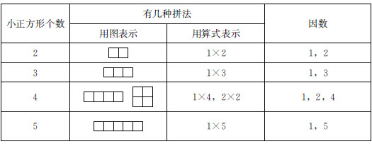
师：从表中可以知道，2、3、5个小正方形只有一种拼法，4个小正方形有2种拼法，现在你有什么猜想？请先把你的想法写下来，再与全班同学交流。
生：2以外的双数至少有2种拼法。
生：所有的单数只能拼1种。
生：双数拼法比较多。
生：有几种拼法就能写出几个算式。
师：请你们自己再找一些数来验证这些猜想。选几个小正方形拼一拼，把拼的方法记录在表格中，看一看自己的猜测是否正确，你还发现了什么。
（学生操作活动，继续举例“拼小正方形”，如6、7、8、9、12、17、20等。有的学生不再拼小正方形了，而是直接画图、写算式、写因数。教师再次组织学生交流。）
生：2也是双数，只有1种拼法。
生：2以外的双数至少有两种拼法是对的，如10有2种，6有3种。
生：15和27都有2种拼法，所以所有的单数只能拼1种是错的。
生：10和9的拼法一样多，所以双数多是错的。
师：请你写一写、数一数因数的个数，你又发现了什么？
生：只有2个因数的只有1种拼法。
生：有2种拼法的有3个或3个以上的因数。
师：像2、3、5、7、11这样的数叫做质数，像4、6、8、9、10、12这样的数叫做合数。
师：你认为怎样的数是质数，怎样的数是合数？先与同桌说说你的理解，再全班交流。
生：只有2个因数的数叫做质数。
生：只有1种拼法的数是质数。
生：只能表示成2个因数相乘的算式的数是质数。
生：除2以外所有的偶数都是合数。
生：质数只有1种拼法，合数有2种或2种以上拼法。
学生对数学知识的理解起源于自我的活动经验，并且在学习过程中自主建构对知识的理解，起源于数学活动的原始认识和表象是数学理解的基础。学生学习任务的选择和设计要注意激发学生的思维投入，而不仅仅是以掌握知识为目的。“质数和合数”属于概念教学，内容相对比较抽象，学生理解有一定困难。在这个教学片段中，教师创设了学生参与操作活动的机会，将教材中静态的写约数活动换成动态的实践活动，通过“拼小正方形”的活动激发学生的思维投入，促进学生从具体操作、表象操作到抽象出概念，学生的思维非常活跃。在教师的引导下，在“拼小正方形”的过程中，学生用图、算式、因数等不同的方式表示这个数，产生了很多猜想，教师继续引导学生举例验证，逐步发现规律。然后，教师给出了一个操作性定义，引导学生自己表达对“质数、合数”的理解，学生从不同角度表达了自己的理解，教师在此基础上再进行引导归纳。这样的学习任务的设计，为学生提供了操作、思考的素材，提供了反思和表达的机会，有利于激发学生的思维投入，促进学生的数学理解。
［教学片段］以丰富的学习材料帮助学生理解“小数的性质”
师：刚才这位同学认为0.6=0.60，很多同学也赞同，那么你能不能用一定的方法来验证或说明0.6=0.60呢？请思考一下，你也可以借助信封袋里的材料思考。
（学生动手操作，自主探究方法，同学间交流讨论）
师：你选择了哪一种方法来说明0.6=0.60？请向全班同学介绍一下。
生：0.6=0.60，因为0.6元就是6角，0.60元就是6角0分，所以它们是相等的。
生：我选用了两个正方形的材料进行验证（如下图），因为0.6就是十分之六，也就是把这个正方形平均分成十份，表示其中的六份；0.60就是百分之六十，也就是把这个正方形平均分成一百份，表示其中的六十份。从图中可以看出，两个数表示的阴影部分的面积是一样的。所以，我也认为“0.6=0.60”是对的。
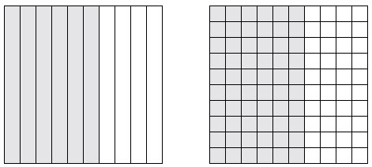
生：我是从“数位”来想的，两个数的十分位都是6，0.60百分位上是0，0.6百分位上没有，也可以看做0，所以我说0.6和0.60是相等的。
生：0.6米就是60厘米，0.60米也是60厘米，所以0.6=0.60。
生：0.6的计数单位是0.1，0.6表示6个0.1；0.60的计数单位是0.01，0.60表示60个0.01，60个0.01等于6个0.1，所以0.6和0.60相等。
师：刚才同学们从不同的角度验证、说明了0.6=0.60。由此我们可以得出，“小数的末尾添上0，小数的大小不变”的猜想是正确的。你能再举一个例子吗？理解是以已有的知识和经验为基础的，在数学知识的学习中，教师向学生提供丰富的感性材料，能调动学生原有的认知结构，通过重组和调整，沟通新知识与原有知识的联系，促进学生理解有关知识。例如，本节课教师为了帮助学生理解“0.6=0.60”，为学生提供了丰富多样的学习材料，而且提供的材料都有一定的代表性，主要有两类：一类是以学生生活经验为主的，如0.6元和0.60元、0.6米和0.60米。另一类是以学生原有的数学知识为基础的，如正方形中画阴影部分、计数单位、数位顺序表等。从课堂教学的实际过程看，学习材料的多样化为学生自主选择研究材料提供了更多的可能，学生通过不同的途径、从不同的角度、用不同的方法验证说明了同一个问题，获得了对小数性质的具体的感性的知识，促进了学生对“小数的性质”的理解，同时也使学生感受到了知识间的内在联系，使新知识成为学生个人内部的知识网络的一部分。由此可见，学生在学习新知识时，有时需要依靠具体经验和原有的知识基础获得对新知识的理解，这就要求教师根据学习内容和学生实际，为学生提供实物、图、表等丰富的数学学习材料，并创设学生操作、交流的时间和空间，使学生借助学习材料获得学习新知识需要的感性认识，并通过自己的思考理解有关内容，将其纳入自身的知识体系。这样，学生获得的知识才是深刻的、清晰的、牢固的。还要注意的是，教师设计和提供的每个材料都要具有一定的代表性。如果教师为学生提供了多种学习材料，但只是简单的重复，缺乏层次性与代表性，与提供单一学习材料并没有本质上的区别。
［教学片段］引导学生经历“长方形的面积”计算方法的“再创造”过程
（估计“卡片”的面积）
师：（出示长方形“神奇宝贝”卡片）请你估计一下这张卡片的面积大约是多少？
生：15平方厘米。
生：18平方厘米。
生：28平方厘米。
师：同学们估计了很多答案，这张卡片的实际面积到底是多少，你们有办法测量吗？请你试着测量出卡片的实际面积，可以利用老师给你的工具。
（学生动手操作，用自己的方法测量出卡片的实际的面积；教师巡视指导）
（反馈交流，形成猜想）
师：你实际测量出来的这张卡片的面积是多少？
生：40平方厘米。
师：现在都同意40平方厘米，你是用什么方法测量的呢？
生：（上讲台演示）我用透明方格纸盖在卡片上面，然后数一数，每排有8个1平方厘米的小正方形，这样有5排，所以卡片的面积是40平方厘米。
生：（上讲台演示）我是用1平方厘米的小正方形摆的。（该学生一行摆了8个，一列摆了5个，没有铺满）
师：这样摆，你怎么知道卡片的面积呢？
生：每行可以摆8个1平方厘米的小正方形，每列可以摆5个，乘一下就是40个1平方厘米的小正方形。
生：我还有个笨办法，看着他摆的，我可以一排一排地去数，也能知道是40平方厘米。
师：还有其他方法吗？
生：我是用尺子量的。
师：用尺子能直接量出面积吗？我们知道，尺子是用来量长度的，一起来听他介绍一下。
生：（边演示边说明）我用尺子量出卡片的长是8厘米，宽是5厘米，乘一下，面积是40平方厘米。
师：他的方法你们听懂了吗？谁能再解释一下？
生：先用尺子量出卡片的长和宽，再用长乘以宽算出面积。
生：长8厘米就可以摆8个1平方厘米的小正方形，宽5厘米就可以摆5个1平方厘米的小正方形，所以面积是40平方厘米。（教师和学生一起用掌声表扬这位同学精彩的解释）
师：这位同学的方法是先用尺子量出卡片的长和宽，然后用“长×宽”计算出卡片的面积。用这种方法得到的答案和我们用小正方形摆出来的结果是一样的，看来用长乘以宽计算这张卡片的面积是可以的，这种方法对于其他的长方形是否也适用呢？我们可以怎么办呢？
生：再找几个长方形来试一试。
师：这是一个好办法，我们来试一试。
（举例验证，探索方法）
师：老师这里为大家准备了几个长方形，我们4人小组合作来试一试，小组分工，每人选一个图形验证，其中一个同学画一个长方形试一试。
师：请每位同学先用刚才这位同学提出的“长×宽”的方法测量计算面积，再用其他方法验证一下，把有关数据记录下来。
（学生实践操作，教师巡视指导）
师：请在小组里交流一下你得到的结果，说一说你是怎么得到的，并选一名代表发言。
师：哪个小组来汇报你们的研究结果，并举个例子来说明是怎么验证的？
生：我们小组认为这种方法是正确的，比如我画了长是7厘米、宽是5厘米的长方形，7乘以5等于35平方厘米，然后我用方格纸验证一下是对的。
生：我们选了3号图形，长是11厘米，宽是2厘米，面积就是22平方厘米，我用小正方形摆了一下，每行可以摆11个小正方形，可以摆2行，是对的，所以我们认为这种方法是可以的。（学生说后教师用课件演示）
生：我也画了一个长方形，长是4厘米，宽是3厘米，（4+3）×2=14（厘米）。
师：对他的结果你有什么想法？
生：他这样计算不对，这样算是周长，应该用4乘以3，等于12平方厘米。
生：我们小组也认为“长×宽”这种方法是可以的，比如1号图形长是7厘米，宽是4厘米，7乘以4等于28平方厘米，然后验证一下，是对的。
生：2号图形的边长是3厘米，3×3=9平方厘米，用小正方形摆来验证也是正确的。
（小结并得出计算公式）
师：刚才几个长方形面积的测量验证，说明刚才这位同学猜想的方法是正确的。现在我们归纳一下，长方形的面积可以怎样计算呢？
生：长乘以宽。（教师板书：长方形的面积=长×宽）
荷兰著名数学教育家弗赖登塔尔说过：“学习数学的唯一正确方法是实行‘再创造’，也就是学生本人把要学的东西自己去发现或创造出来，教师的任务是引导和帮助学生进行这种再创造的工作，而不是把现成的知识灌输给学生。”数学学习过程不是让学生被动地接受教材或教师给出的现成结论，而是要通过组织合理的数学活动，让学生经历知识的“再创造”过程。学生在不断的经历过程中主动地从事数学思考，在理解的基础上建构数学知识。对知识与方法的理解并不等同于知道是什么、怎么做，会背定义、会套用公式计算并不等同于理解了相应的数学概念、数学法则。长方形面积的教学不仅要让学生知道计算公式，会用面积公式进行计算，更重要的是要引导学生经历探索研究长方形面积公式的过程，通过实践操作、讨论、交流等活动，自己探索发现长方形面积的计算方法，并能感悟到“长×宽”的算理，促进学生对数学的理解。也就是说，长方形的面积的教学不仅要让学生会用“长×宽”计算面积，而且要让学生通过语言表述、实际操作等解释“长×宽”的意义，并能实际应用，这样才是真正理解知识。本节课中引导学生在活动中学数学，设计了两次不同目的的操作体验（学生独立操作的时间有近9分钟），让学生经历“测量面积，产生猜想——举例验证，归纳方法——推广应用”的科学研究过程，力求通过让学生“做”数学，逐步使学生既知道长方形的面积公式，又在大脑中建立起为什么长方形的面积公式是“长×宽”的表象，较好地获得对长方形面积计算方法的理解。这样，从学生已有的生活经验出发，让学生亲身经历将实际问题抽象成数学模型并进行解释与应用的过程，促进了学生对数学的理解。学生的整个认知过程体现了布鲁纳“表象模式理论”的三个阶段，即知识的掌握和理解经历了三个认知发展阶段：动作式再现表象阶段——映像式再现表象阶段——符号式再现表象阶段。学生在教师创设的数学学习情境中，通过自我思考、与同伴和教师交流，“创造”了自己所理解的数学。学生这样的数学学习过程是一个构建自己对数学知识的理解的过程——每一次学习活动都会对相应的学习对象形成一定的理解，并将新的信息纳入自己的知识体系，形成新的知识网络和图式结构。这样的教学方式不仅有助于学生理解数学，还有益于他们获取比知识本身更重要的东西——数学方法、数学能力和对数学的积极情感。
［教学片段］用自己的方式表达对“异分母分数加减的计算方法”的理解
师：猴王给两只小猴分一个饼，一只小猴分到了这个饼的
，另一只小猴分到了这个饼的
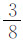
。两只小猴一共分到了这个饼的几分之几？生：
＋
。
师：
＋
等于多少呢？你能用什么方法得到答案呢？先自己独立思考，再与同学交流。
（学生操作，教师巡视指导，组织交流反馈）
生：我画了个图（边画图边解释），从图上可以看出
就是
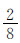
，合起来就是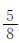
。生：我是根据刚才“分饼”来想的，先把饼平均分成4份，一只小猴吃了其中的一份，如果把每一份再平均分成2份，一共把饼分成了8份，这只小猴分到了其中的 ，另一只分到了这个饼的
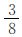
，一共分到了这个饼的 。生：我是折纸计算（边说边演示），先把这张纸对折，再对折后打开，这时把这张纸平均分成了4份，一份就是
。如果再对折，就是把这张纸平均分成了8份，我们可以看到原来的
变成了
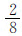
，与 合起来就是 。生：我先把
化成
，再根据同分母分数计算方法计算，
＋
=
。
师：你为什么要把
化成
呢？可以直接加吗？
生：不能直接加，昨天上课时讲了，分母相同时才能直接加减。这两个分数的分母不一样，也就是分数单位不一样，所以不能直接相加。
生：我还有一种方法，
=0.25，
=0.375，0.25+0.375=0.625，0.625等于
。
师：同学们用多种方法解决了“
＋38”的问题，方法主要有两类，前面4种方法都是把
先化成
再相加，还有一种是化成小数再相加。
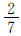
+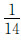
你会算吗？请你用刚才这些方法试一试。学生尝试计算后交流计算方法，教师引导学生比较反思，使学生体会到“先化成分母相同的分数再相加”是一种通用的方法，而“化成小数再相加”的方法有一定的局限性。
交流与表达个人的观点是理解的一个重要指标，表达可以是口头的、书面的，也可以通过其他方式，如图片、图形或模型等。儿童对数学的理解常常是稚嫩的、不成熟的，但同时这种理解又是最具有个性的。我们要珍视这种最初的、朴素的理解，创设机会鼓励学生用自己的方式表达对数学的理解，帮助学生有效地使用多种语言表达自己的数学理解，并抓住契机适时地加以引导，这样能激发学生参与学习的热情，树立学好数学的信心，而且有利于学生在表达的过程中进一步理清自己的思考方法，并有机会分享同学的想法，起到相互启发、相互促进的作用。例如，上述异分母分数加减法计算方法的教学，不仅要让学生知道“先通分再按照同分母分数加减法的计算方法相加减”，而且要鼓励学生自己探索方法，建立数学模型，表达对方法的理解。在交流过程中，尽管学生对算法的表达有不够清楚的地方，但蕴涵在其中的对数学的理解足以让我们欣慰。这样教学，每一个学生都能主动地参与数学活动，学生有充分的时间和空间进行思考，都能对面临的数学问题表达自己的理解，在独立思考、相互交流、分享成果的氛围中倾听、思考。这样的数学课堂，数学的学习方式不再是单一的、枯燥的，数学学习真正成为充满生命力的过程。
课堂智慧
以丰富的活动体验促进概念的有效建构
——“面积”教学案例
什么是“面积”？《现代汉语词典》关于面积的解释是：“平面或物体表面的大小。”《辞海》关于面积的解释是：“几何学的基本度量单位之一，是用以度量平面或曲面上一块区域大小的正数，通常以边长为单位长的正方形的面积为度量单位。”北师大版小学数学教材关于面积的描述是：“物体表面或封闭图形的大小叫做面积。”
“面积”教学教什么？怎么教？如何引导学生理解“面积”概念的丰富内涵，形成对概念内涵的清晰认识，而不仅仅是让学生抽象地记忆“物体表面或封闭图形的大小叫做面积”。教学时，要注重概念本质、淡化形式，不要过多地围绕概念的定义去探讨“物体表面”、“封闭图形”这些词语的意思。例如，对于“物体表面”，主要是让学生认识物体的某个面，由于是初步认识，不一定要涉及曲面。对于“封闭图形”，也只要通过画图、举例等方式让学生直观感知即可，不必过多地讨论。教学时，从学生对生活中面积的最初认知入手，结合学生最常见的物体（如数学课本等），通过摸物体的面、比较面的大小和平面图形的大小、在正方形中画图形、用面积单位的个数描述图形面积的大小、表面覆盖活动（如涂色活动、用数学书去“铺”桌面）等丰富的数学活动，引导学生感知面的存在和面的大小，丰富对面积的感性认识，积累丰富的度量面积的经验，从而理解面积的含义，有效建构面积概念。
师：（课件呈现一串沙滩脚印图）小明和他的爸爸到沙滩上去玩，玩的时候留下了一串串的脚印，朱老师从里面选择了两个。（课件呈现一大一小两个脚印）
师：你能够分辨出哪个是小明的脚印，哪个是小明爸爸的脚印吗？
生：小的是小明的脚印，大的是小明爸爸的脚印。
师：谁知道他是根据什么分辨出来的？
生：他是根据脚印的大小分辨出来的。
师：根据这两个脚印的大小，分辨出哪个是小明爸爸的脚印，哪个是小明的脚印，像这样的脚印的大小在数学中称做什么呢？（下面有学生跟着说“面积”）
师：今天这节课，我们就一起来学习和了解面积。（板书：面积）
师：听说过面积吗？哪儿有面积？
生：房子有面积。
生：操场有面积。
生：黑板的面有面积。
师：刚才有同学说到黑板的面也有面积，面是什么意思？面在哪儿呢？你能在身边找一个物体说一说面在哪儿吗？
（学生先后说了桌子的表面、书本的封面、本子的封面、铅笔盒的表面等，教师引导学生分别摸一摸，同桌间互相说一说，充分感受面的存在）
师：（举着书和本子）刚才有同学说了书本的封面、本子的封面，这两个面哪个大、哪个小呢？
生：数学书的面大，练习本的面小。
师：你是怎么知道的呢？
生：把它们重叠起来比一下。
师：把两者重叠，这是比较面积的一个很好的办法，你重叠给大家看一看。
（一学生上讲台操作）
师：重叠起来，你发现哪个面大一些？
生：数学书的面要大一些。
师：看来面是有大小的，面的大小就是面积。（板书：面的大小叫做面积）
师：刚才还说到了桌面，桌面与书本的封面哪个大呢？
生：（齐说）桌面大。
师：那么，你能不能找到一个比桌面大的面呢？
生：黑板的面比桌面的面积大。
师：还有没有比黑板的面积更大的？
生：有，操场的面积。
师：看来，面积大的面我们会找了，你们会不会找面积小的呢？
师：（拿起一个铅笔盒指着一个面）你能不能找一个比它面积更小的面？
生：橡皮的面。
师：还有没有比橡皮的面面积更小的？
生：肯定有。
师：能说完吗？我们课后可以再去找哪里有更大的面，哪里有更小的面。
师：刚才我们说到的这些面都是物体的表面，这些面的大小就是这个面的面积。（板书：物体表面）
师：（指着铅笔盒的一个面）如果把铅笔盒的这个面画下来，它就是什么图形？
生：长方形。
师：长方形的大小、图形的大小你会比吗？试一试。
（课件出示：比较下面两个图形的面积）
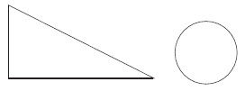
师：谁能比出这两个图形的大小？
生：三角形的面积大，圆的面积小。
师：（出示第二组）你能比较浙江省和湖南省的面积的大小吗？
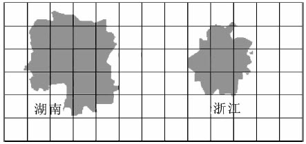
生：湖南省的面积比浙江省的面积大。
师：怎么知道的？
生：直接观察，就可以看出来。
师：（出示第三组）这是两个平面图形，你能说出它们的面积大小关系吗？
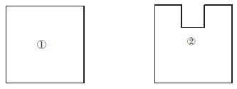
生：①号图形的面积比②号图形的面积大。
师：有没有不同的观点？
生：②号图形的面积比①号图形的面积大。
师：有两种不同的观点，你支持哪一种，说说你的想法。
生：②号图形缺了一块，②号图形的面积小。
生：刚才他觉得辨别面积的大小是把周长相比较。
师：周长和面积是不是一回事？
生：不是。
师：谁来说一说，比如①号图形，周长是指什么？面积是指什么？
生：周长就是它的四条边的长，面积是四条边围起来的地方。
师：周长和面积一样吗？（多媒体演示两个图形的周长和面积，并重叠比较面积的大小）
生：②号图形比①号图形的周长要长。
师：刚才我们比较的是几组封闭的平面图形的大小，物体表面或封闭平面图形的大小就是它们的面积。（完成下面的板书）面的大小叫做面积
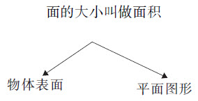
自选单位的多样性师：（多媒体出示一个正方形）面的大小是面积，那么，像这个正方形的大小怎么来说明呢？我们来继续研究。
师：（课件将正方形变成七巧板，并演示涂色过程）在这个七巧板中，哪个图形的面积最大？哪个图形的面积最小？你能比一比、说一说吗？
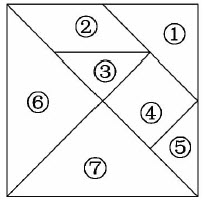
生：⑥号图形的面积最大。
生：⑥号和⑦号图形的面积最大。
师：⑥号和⑦号图形的面积最大，哪一块最小呢？
生：③号和⑤号图形的面积最小。
师：谁能提个问题？
生：那个⑥号三角形有几个？
师：真是太棒了，老师也想问这个问题，大家为他提出一个好问题鼓掌。
师：这个正方形里有几个⑥号三角形？你能回答吗？
生：有4个⑥号三角形。
师：你是怎么想出来的呢？
生：看着图数出来的。
生：如果把一个大正方形看成两半的话，下面就有⑥号和⑦号两个同样大的，上面也有两个同样大的，所以就有4个。
师：我听明白他的想法了，他在用前面七巧板的⑥号和⑦号思考问题。
（教师用课件演示数出4个的过程）
师：（课件出示下面两幅图）这个正方形中有4个⑥号三角形，有几个①号三角形呢？如果我在正方形中画⑧号正方形，又有几个呢？
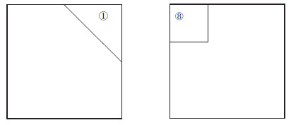
师：怎样来说明你的想法呢？你能不能在正方形中画一画，说明自己的思考方法？同桌之间分工，一位同学想有几个①号三角形，另一位同学想有几个⑧号正方形，然后同桌交流一下。
（学生动手画，并同桌交流）
（教师展示部分学生的作品，组织学生交流）
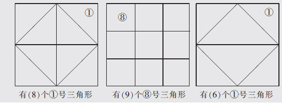
师：我们来听听它们的意思是什么。
生：这个正方形中有8个①号三角形。
生：有9个⑧号正方形。
生：第三幅图有问题，它画出来的中间的三角形和①号三角形不相等。
生：它画出来4个①号三角形，中间它应该也画4个。
生：我用七巧板想，有8个①号三角形。
师：也可以通过想象，是吗？你真的很棒！
师：刚才我们通过画，通过想象，现在我们一起来用其他图形说明这个正方形的大小，回顾一下，分别有几个呢？（课件出示三幅图）
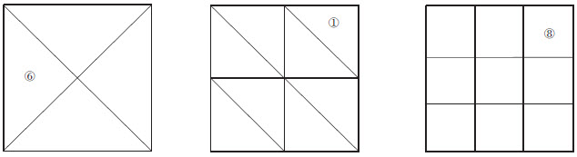
生：（齐答）有4个⑥号三角形，有8个①号三角形，有9个⑧号正方形。
师：都是用摆几个三角形或小正方形来说明这个正方形的大小，为什么个数不一样呢？
生：因为三角形、正方形的大小不一样。
师：像刚才这样，选择一个图形做标准，是常用的测量或描述一个图形或物体的面的大小的方法。例如桌面的大小，我们也可以选择一个物体做标准，如数学书，大家估计一下，我们这个桌面有几个数学书封面的大小呢？
生：4个。
生：我认为有6个。
师：到底有几个数学书的封面的大小呢？
生：可以摆一摆。
（学生同桌合作用书摆一摆）
生：大约有6个。我们摆了5本，比5本多一点。
师：那你们的小凳子可以摆几本书啊？
生：2本，不到2本。
师：大约2本书的大小，那么哪个面积大，你们比出来了吗？
生：桌子的面积大。
师：这个桌面可以用数学书去量，可不可以用其他东西量？
生：可以用本子量。
生：还可以用铅笔盒的一个面去量。
生：还可以用橡皮的一个面，就是比较麻烦。
师：朱老师用小本子摆了一下，这个桌子能摆几本呢？（课件演示摆的过程）
生：18本。
师：也就是说，我们刚才说大约有5本数学书封面的大小，也可以说是18本小练习本封面的大小。由此看来，量桌面的面积有很多方法呢！
（教师引导学生小结）
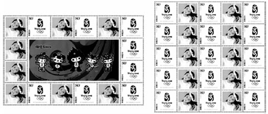
教师先出示长方形和正方形，学生比较，学生都认为这两个图形一样大。教师用多媒体呈现邮票图案，提示“你能根据邮票再想一想吗”，引导学生用邮票作为标准，学生很快发现正方形可以摆25张邮票，长方形可以摆24张邮票，并得出结论。教师再小结：“像这样两个图形或物体的表面大小比较接近，直接观察有困难时，可以利用其他图形或物体量一量、比一比。”
教师先出示实物，引导学生思考：“这样摆一层的话，在桌面上大概可以摆几个？”学生猜测后实际摆一摆，发现可以摆7个多一点。再追问：“不能叠起来，你有办法摆这样的10个纸巾盒吗？”学生非常踊跃，并上来演示，发现用侧面去摆，可以摆16个。最后，讨论：“为什么前面摆不下，后面就摆得下了呢？”学生的思维非常活跃。
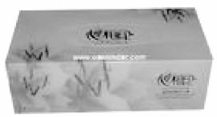